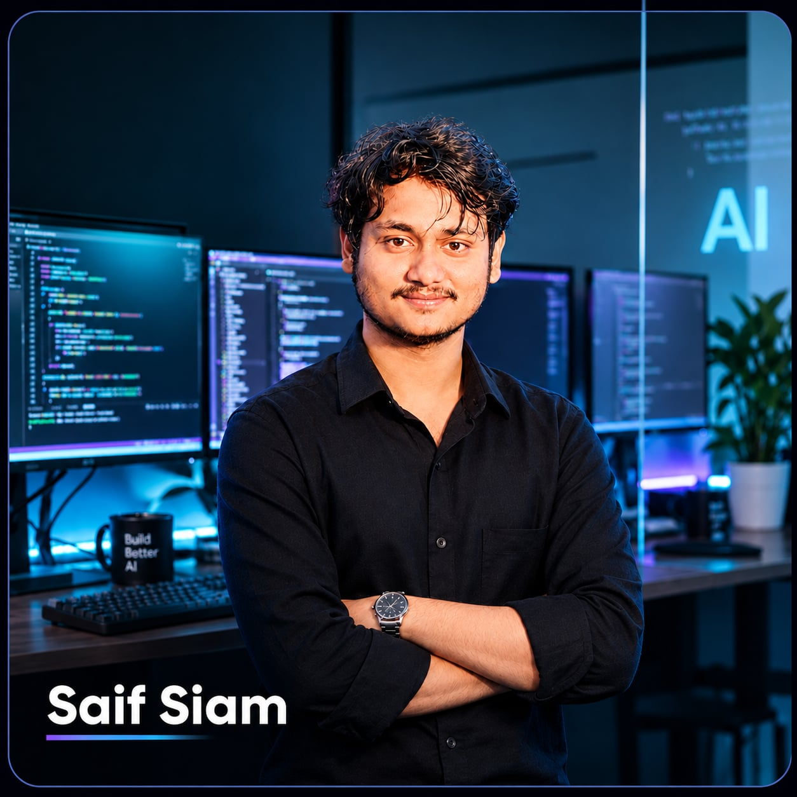

MD. Saif Siam
I'm a third-year CSE student at BUBT in Dhaka, building AI tools that solve real problems — from turning long videos into viral clips, to climate-risk advice for Bangladeshi farmers.
About
Who I am, in short.
I'm Saif, a Computer Science & Engineering undergraduate at the Bangladesh University of Business and Technology (BUBT). I like building things with code — especially AI and machine learning: video understanding, prediction models, and tools people actually use. My goal is to become an AI engineer, and I'm working toward continuing my degree in Germany from Winter 2027.
Outside code, I run a small video-production business (FrameWorks by Saif) making faceless animated Shorts and product promos — which is where ClipForge came from.
Projects
Things I've built — all open source on GitHub.
ClipForge
An AI tool that turns long videos (podcasts, streams, lectures) into viral vertical short clips — it finds the high-impact moments, generates word-level animated subtitles, and reframes speakers to 9:16 with face detection.
AGRI-GUARD
A climate risk & crop advisory system for Bangladeshi farmers. It analyses weather, soil and environmental data to predict risks like floods and droughts, and turns them into plain-language farming advice.
BUBT Connect
A full-stack web app for BUBT students — a digital community, academic and emergency platform for the university, built mobile-first as a progressive web app.
Price Prediction
Machine learning notebooks exploring price prediction — data cleaning, exploratory analysis and model training in Python.
More on my GitHub — including an AI Engineering bootcamp journey, data-analysis notebooks, and early Python & ML practice projects. See all repositories →
Achievements
Things I'm proud of.
WSDG — Bangladesh National Round 2026
Won the Bangladesh National Round 2026 with Team Agni Guard, and was selected for the International Final Round 2026 in Malaysia.
Education
Where I'm studying — and where I'm headed.
BSc in Computer Science & Engineering
86.5 credits completed so far, with more in progress. Focus: programming, data structures & algorithms, databases, and software development.
Next: Germany — Winter 2027
Planning to continue my CSE degree in Germany, starting Winter 2027 — top choices are Saarland University and OTH Regensburg.
Contact
Want to talk about AI, a project, or just say hi?